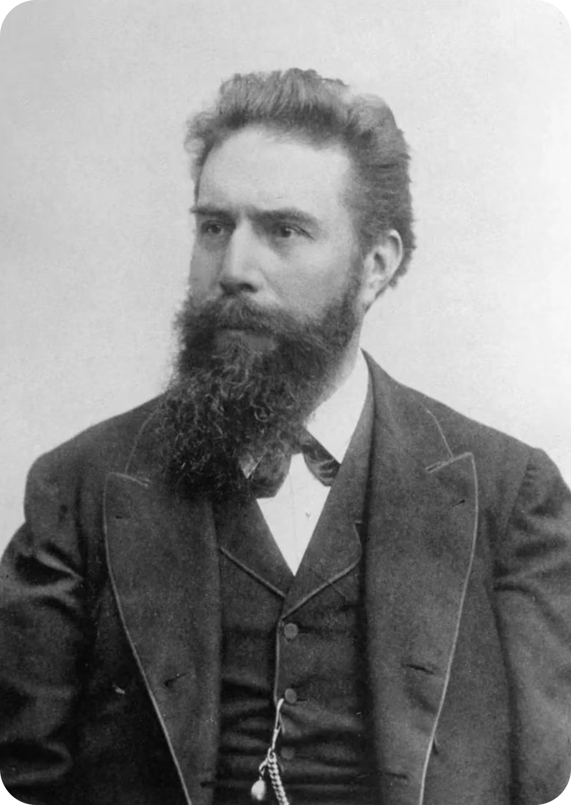
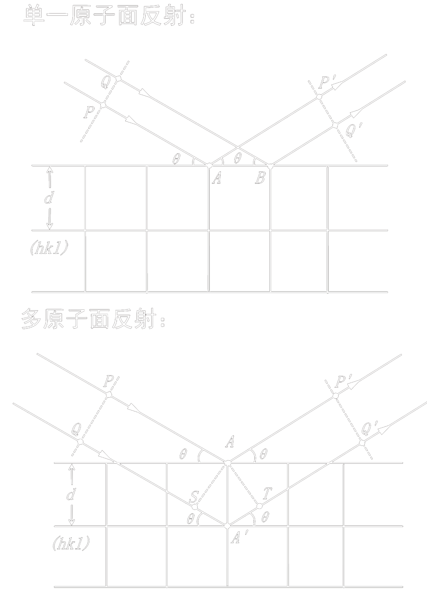
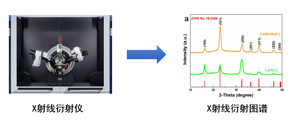

X射线衍射实验
实验背景

X射线衍射（$XRD$）是研究晶体结构的重要技术。1895年伦琴发现$X$射线，1912年，劳厄首次观察到$X$射线在晶体中的衍射现象，随后布拉格父子提出布拉格定律，为晶体结构分析奠定了基础。$X$射线衍射利用$X$射线与晶体中周期性排列的原子的相干散射，通过分析衍射图谱获得材料的物相、晶格常数、应力、取向等信息，广泛应用于材料科学、化学、矿物学等领域。
$X$射线衍射是指当一定波长的$X$射线照射到晶体材料上时，由于晶体内部原子呈周期性规则排列（即晶格结构），$X$射线发生相干散射，并在满足布拉格定律的特定方向上产生相长干涉，从而形成衍射峰的现象。
掌握布拉格定律的几何推导及其物理意义，理解衍射方向与晶体结构的关系；熟悉衍射强度的影响因素（如结构因子、多重性因子、角因子等）；能够根据衍射谱进行物相鉴定、晶格常数计算，并理解X射线与物质相互作用的基本过程。
实验原理

实验原理
1.$X$射线的产生与性质
X射线产生的条件：
- 以某种方式获得一定量的自由电子；
- 在高真空环境中，通过高压电场使电子加速至高速运动状态；
- 在电子运动路径上设置阳极靶使高速电子突然受阻而停止。
X射线的性质：$X$射线是一种电磁波，波长范围约为0.01~100 Å，用于衍射分析的波长约为0.5~2.5 Å。$X$射线具有波粒二象性，穿透能力强，在常见介质中几乎不发生折射。在$X$射线管中，高速电子轰击金属靶（如$Cu$、$Mo$、$W$），电子动能大部分转化为热能，少部分转化为$X$射线。
2. $X$射线与物质的相互作用
$X$射线到达物质后，主要发生散射、吸收和透射等现象。
相干散射：入射的$X$射线光子与原子中束缚较紧的内层电子发生弹性碰撞，光子方向改变，但能量几乎不变，波长不变，这种散射称为相干散射（汤姆孙散射）。相干散射是$X$射线在晶体中产生衍射的基础。
非相干散射：当$X$射线光子与原子中受核束缚较弱的电子发生碰撞时，电子被撞离原子并带走光子的部分能量而成为反冲电子，光子方向改变且能量降低，波长变长，这种散射称为非相干散射（康普顿散射）。由于非相干散射的波长和方向均发生变化，不能产生干涉，因此在衍射图谱上形成连续背底，其强度随$\frac{\sin\theta}{\lambda}$的增加而增大，对衍射分析产生干扰。
3. $X$射线谱的分类

连续X射线谱：当能量为$eU$的电子与阳极靶的原子碰撞时，电子电子减速过程中辐射出$X$射线光子。电子可能一次辐射一个光子，也可能多次碰撞辐射多个能量不同的光子，这些光子叠加形成连续谱。实验表明，连续谱的总强度为 $I_{连续} = KiZU^{2}$ 其中$U$为管电压，$i$为管流，$Z$为阳极靶材的原子序数，$K$为常数（约$1.1 \times 10^{- 9}$~$1.4 \times 10^{- 9}$）。
特征X射线谱：当管流不变而管压升高至某一临界值$U_{K}$时，连续谱的某些特定波长处出现强度很高的锐锋，它们构成了特征$X$射线谱。特征$X$射线谱的波长只取决于靶材原子的种类，与其他因素无关。1914年，莫塞莱发现该规律，并提出莫塞莱定律： $$\sqrt{\frac{1}{\lambda}} \propto K\left. （Z - \sigma \right.）$$ 其中$\lambda$为特征$X$射线波长，$Z$为靶材原子序数，$K$、$\sigma$为常数。
4. 布拉格方程的推导

布拉格方程推导：考虑相邻两个平行晶面 $(hkl)$，相邻平行晶面的面间距为$d$。入射 $X$射线以掠射角$\theta$（入射方向与晶面的夹角）照射到晶面上，在相邻晶面上产生的反射波之间的光程差为$\delta = 2d\sin\theta$。当光程差等于入射$X$射线波长的整数倍时，反射波相位相同，发生相长干涉，即衍射条件为：$2d\sin\theta = n\lambda$，$n = 1,2,\cdots$ 其中$d$为晶面间距，$\theta$为布拉格角（掠射角，即半衍射角），$\lambda$为$X$射线波长，$n$为衍射级数。
5. 单晶衍射方法
劳厄法：采用连续 $X$ 射线照射固定不动的单晶体，利用$X$射线波长的连续性，使不同波长的射线满足不同晶面的布拉格条件而产生衍射。用垂直于入射线的平板底片记录衍图案，得到劳厄斑点。
转晶法：采用单色 $X$ 射线照射绕某一轴旋转的单晶体，并用一张以旋转轴为轴的圆筒形底片来记录衍射。转晶法的特点是入射线波长不变，而通过旋转晶体连续改变各晶面与入射线的掠射角$\theta$，以满足布拉格条件。转晶法通常选择晶体某一已知晶轴方向为旋转轴，入射$X$射线与之相垂直，衍射花样呈层线分布。转晶法可测定晶体在旋转轴方向上的点阵周期，通过多个方向的测定可确定晶体的结构。
6. 多晶衍射方法
德拜-谢乐法：采用细束单色 $X$ 射线垂直照射多晶粉末圆柱试样，衍射线在空间分布为以入射线为轴的一系列同轴圆锥面，其顶角为 $4\theta$。用以试样为轴线的圆筒状底片记录衍射花样，得到一组弧线对。常用德拜法相机的内径为 57.3mm 或 114.6mm。底片紧贴圆筒内壁，故底片圆环直径近似等于圆筒直径。由德拜法衍射几何图可知： $2l = 4\theta R$或$\theta = \frac{2l}{4R}(rad) = \frac{2l}{4R} \times {57.3}^{°}\ $ 其中$l$ 为底片上弧线对间距，$R$为相机半径。底片安装方式有正装法、反装法和不对称装法。
衍射仪法：采用单色 $X$ 射线照射多晶（粉晶）或转动的单晶试样，利用探测器和测角仪记录衍射线的强度与角度，并将信号转化为电信号进行自动记录，或通过计算机进行数据处理与分析。衍射仪主要由X射线发生器、测角仪、探测器、记录器和控制系统组成。
原理应用
基于衍射峰位与强度的关联，可用于物相鉴定、晶体结构解析、微观应力与晶粒尺寸测定等。

学习要点： 掌握布拉格方程 $2d\sin\theta = n\lambda$ 和结构因子 $F_{hkl}$ 的概念是核心，通过它们可解释衍射方向与强度分布，是物相分析、晶体结构测定及微观应力研究的理论基础。
操作方法
操作方法
选择晶体类型：选择，“$SC$”、“$BCC$”、“$FCC$”
调节晶格常数：滑动滑块或在矩形框输入晶格常数大小
调节扫描步长: 滑动滑块或在矩形框输入扫描步长大小
操作提示： 调节晶格常数时，建议小幅度（0.01nm级）调整，直观观察峰的连续偏移，验证布拉格公式 \(2d·\sinθ=nλ\)。观察衍射峰时，结合标注的 (hkl) 晶面指数，理解晶面与衍射峰的对应关系。
实验仿真
参数控制面板
物理现象说明
- SC：晶胞仅顶点存在原子，无系统消光，所有满足布拉格条件的\((hkl)\)晶面均产生衍射
- BCC：晶胞含顶点与体心原子，消光条件：\(h+k+l\)为奇数时衍射完全消失，仅\(h+k+l\)为偶数的晶面产生衍射
- FCC：晶胞含顶点与面心原子，消光条件：\(h,k,l\)奇偶性混合时衍射完全消失，仅\(h,k,l\)全奇/全偶的晶面产生衍射
- 谱图的绝对强度：仪器直接测得到的原始积分强度（峰面积），它的数值受大量非样品本征的实验因素（仪器相关因素、样品与制样相关因素、 环境与操作因素等）影响，因此，不同仪器、不同制样、不同测试参数下的原始绝对强度，直接比较没有任何科学价值
XRD衍射图谱显示
当前实验参数
晶体类型: SC | 晶格常数: 0.40 nm | 扫描步长: 0.01° | 扫描范围: 10°~80°2θ